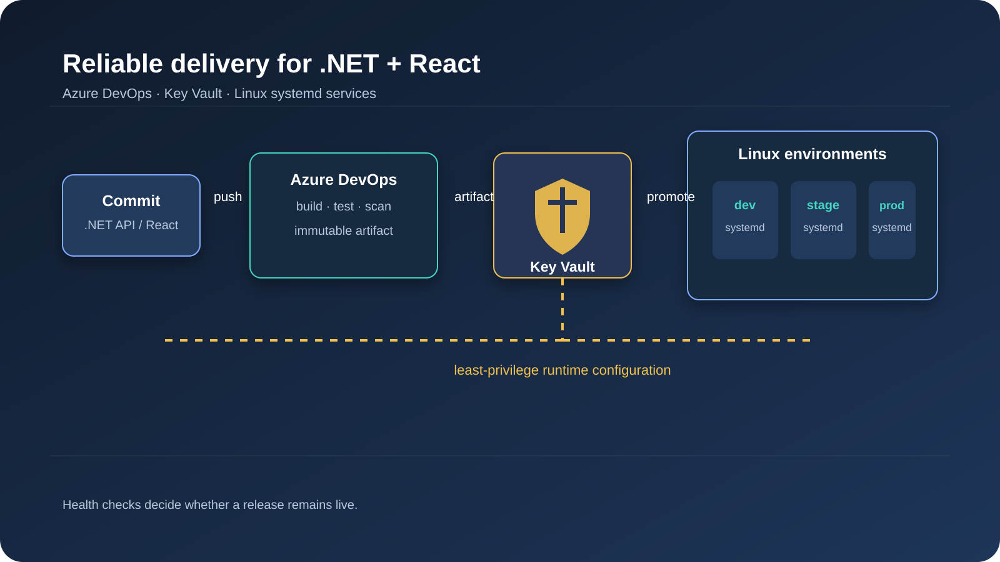

The problem: fast delivery without fragile releases
An ASP.NET Core API and a React single-page application are two independently deployable services. The team needs frequent releases, but a green build alone is not enough. Configuration must be environment-safe, secrets must stay out of source control, and a bad production deployment needs a short path back to the last known good version.
The goal is a pipeline that makes the safe path the easy path. Every change is tested and scanned, promotion is explicit, and runtime health, not task completion, decides whether a release stays live.
What CI/CD means here
Continuous integration (CI) validates each change by building, testing, scanning, and packaging it into a repeatable artifact. Continuous delivery (CD) promotes that immutable artifact through environments with approvals, checks, verification, and rollback. CI answers "can we release this?" CD answers "should we release this here, now, and keep it running?"
Architecture
The API and frontend live in separate repositories, so ownership, release cadence, and rollback boundaries stay clear. Each has its own Azure DevOps YAML pipeline and publishes a versioned artifact. Both run on Linux hosts [state where: Azure VMs / Arc-enabled servers]. The API is a dedicated systemd unit. The React bundle is served by Nginx, also managed by systemd.
- Repositories:
orders-api(ASP.NET Core) andorders-web(React). - Stages: CI, dev, staging, production.
- Environments: Azure DevOps environments
dev,staging, andprod. Approvals and checks are configured on the environment in Azure DevOps, not in YAML or scripts. - Artifacts: a published .NET package and a production React bundle. CD never rebuilds source.
- Isolation: an API change can roll forward or back without a frontend release, and vice versa.
flowchart LR
C[Commit / Pull Request] --> B[Build]
B --> T[Unit tests + coverage]
T --> S[Dependency + secret scans]
S --> A[Immutable artifact]
A --> D[Dev]
D --> G[Staging]
G --> P[Production]
P --> H[Health checks]
H -->|Fail| R[Automatic rollback]Figure 1: the release path from commit to verified production.
CI: prove the artifact is releasable
CI restores from lockfiles, builds on a clean agent, runs tests and scans, and emits one artifact. Coverage is a signal, not a target: I track changed-line coverage and set a threshold that protects critical code.
.NET API pipeline
trigger:
branches: { include: [ main ] }
pr:
branches: { include: [ main ] }
pool:
vmImage: ubuntu-latest
variables:
buildConfiguration: Release
dotnetVersion: '[supported .NET SDK version, e.g. 10.x]'
stages:
- stage: CI
jobs:
- job: Api
steps:
- task: UseDotNet@2
inputs:
packageType: sdk
version: $(dotnetVersion)
- task: DotNetCoreCLI@2
displayName: Restore
inputs: { command: restore, projects: '**/*.csproj' }
- task: DotNetCoreCLI@2
displayName: Build
inputs:
command: build
projects: '**/*.csproj'
arguments: '--configuration $(buildConfiguration) --no-restore'
- task: DotNetCoreCLI@2
displayName: Test with coverage
inputs:
command: test
projects: '**/*Tests/*.csproj'
arguments: '--configuration $(buildConfiguration) --collect:"XPlat Code Coverage" --no-build'
- task: PublishCodeCoverageResults@2
inputs:
summaryFileLocation: '$(Agent.TempDirectory)/**/coverage.cobertura.xml'
- script: |
dotnet list package --vulnerable --include-transitive 2>&1 | tee vuln.txt
! grep -q "has the following vulnerable packages" vuln.txt
displayName: Dependency scan (fail on findings)
- script: echo "[replace with your approved secret scanner, e.g. gitleaks or Microsoft Security DevOps]"
displayName: Secret scan
- task: DotNetCoreCLI@2
displayName: Publish artifact
inputs:
command: publish
projects: '**/*.csproj'
arguments: '--configuration $(buildConfiguration) --output $(Build.ArtifactStagingDirectory)/api --no-restore'
- publish: '$(Build.ArtifactStagingDirectory)/api'
artifact: apiReact pipeline
The build contains no secrets and no environment-specific values. Public configuration is injected at deploy time (see CD below).
trigger:
branches: { include: [ main ] }
pr:
branches: { include: [ main ] }
pool:
vmImage: ubuntu-latest
variables:
nodeVersion: '[supported Node.js LTS version, e.g. 22.x]'
stages:
- stage: CI
jobs:
- job: React
steps:
- task: NodeTool@0
inputs: { versionSpec: $(nodeVersion) }
- script: npm ci
displayName: Install locked dependencies
- script: npm run lint
displayName: Lint
- script: npm test -- --runInBand
displayName: Unit tests
- script: npm audit --audit-level=high
displayName: Dependency scan (fail on high)
- script: echo "[replace with your approved secret scanner]"
displayName: Secret scan
- script: npm run build
displayName: Production build
- publish: '$(Build.SourcesDirectory)/dist'
artifact: webA scan must publish actionable results and fail on the agreed severity. Otherwise it becomes a dashboard nobody checks.
Configuration and secrets with Azure Key Vault
Credentials, connection strings, signing keys, and tokens never belong in Git, pipeline YAML, screenshots, or task output. Repositories are copied, forked, and cached far more widely than the production runtime.
One vault per environment. kv-orders-dev, kv-orders-staging, and kv-orders-prod, with identical secret names so code stays the same while values and access differ. Key Vault secret names allow only letters, digits, and dashes, so use names like ConnectionStrings--Orders. The -- maps to : in .NET configuration.
Least-privilege access.
- The pipeline service connection uses workload identity federation, never a long-lived client secret.
- Use Azure RBAC rather than access policies. Grant "Key Vault Secrets User" on the specific vault only.
- At runtime, the host's managed identity reads the vault directly. Pipelines never see production secret values.
The vault address is not a secret. Set KeyVault__Uri as a plain environment variable in the service's environment file (for example /etc/orders-api/orders-api.env, mode 0640), written at deploy time per environment.
API code. Use a pinned credential in production instead of the full DefaultAzureCredential chain, which probes several sources and can be slow or ambiguous on a server. Keep DefaultAzureCredential for local development:
using Azure.Core;
using Azure.Extensions.AspNetCore.Configuration.Secrets;
using Azure.Identity;
using Microsoft.AspNetCore.Diagnostics.HealthChecks;
using Microsoft.Extensions.Diagnostics.HealthChecks;
var builder = WebApplication.CreateBuilder(args);
TokenCredential credential = builder.Environment.IsDevelopment()
? new DefaultAzureCredential()
: new ManagedIdentityCredential(builder.Configuration["KeyVault:ManagedIdentityClientId"]); // omit for system-assigned
builder.Configuration.AddAzureKeyVault(
new Uri(builder.Configuration["KeyVault:Uri"]!),
credential,
new AzureKeyVaultConfigurationOptions { ReloadInterval = TimeSpan.FromMinutes(15) });
builder.Services.AddHealthChecks()
.AddCheck("self", () => HealthCheckResult.Healthy(), tags: new[] { "live" });
// [add dependency checks tagged "ready", e.g. database]
var app = builder.Build();
app.MapHealthChecks("/health/live", new HealthCheckOptions { Predicate = c => c.Tags.Contains("live") });
app.MapHealthChecks("/health/ready", new HealthCheckOptions { Predicate = c => c.Tags.Contains("ready") });
app.Run();The package is Azure.Extensions.AspNetCore.Configuration.Secrets. ReloadInterval lets the app pick up rotated secrets without a restart. Without it, values load once at startup, so rotation requires a restart.
React is different. Anything in a browser bundle is public. I inject only non-sensitive values, such as the API base URL, as a config.json written next to the bundle at deploy time. No password or private token belongs in a bundle.
Operate the vault. Enable soft delete, purge protection, diagnostic logging, and alerts for unusual access. Rotate secrets on a schedule and after incidents, and test that the app handles rotation. Rotation is an operational workflow, not a one-time setup.
flowchart TB
subgraph Pipeline
SP[Azure DevOps service connection<br/>workload identity] -.->|deploys only, no secret values| HOSTS[Linux hosts]
end
subgraph Runtime
MI1[Dev host identity] -->|Secrets User| KV1[Key Vault: dev]
MI2[Staging host identity] -->|Secrets User| KV2[Key Vault: staging]
MI3[Prod host identity] -->|Secrets User| KV3[Key Vault: prod]
end
KV1 --> API1[.NET API dev]
KV2 --> API2[.NET API staging]
KV3 --> API3[.NET API prod]Figure 2: the pipeline deploys; the running service fetches its own secrets.
CD: promote the same artifact to systemd services
CD downloads the CI artifact and deploys it unchanged. Each stage maps to an Azure DevOps environment, which owns approvals, branch restrictions, and required checks. Production requires approval, a change-window check, and a successful staging run [add provenance check only if you enforce one, and say how].
Reusable deployment template
One parameterized template replaces three copy-pasted stages, so every environment gets the same steps.
# templates/deploy-api.yml
parameters:
- name: environment
type: string
- name: sshEndpoint
type: string
- name: healthUrl
type: string
default: http://127.0.0.1:8080/health/ready
jobs:
- deployment: Deploy_${{ parameters.environment }}
displayName: Deploy API to ${{ parameters.environment }}
environment: ${{ parameters.environment }}
strategy:
runOnce:
deploy:
steps:
- download: current
artifact: api
- task: CopyFilesOverSSH@0
displayName: Upload release
inputs:
sshEndpoint: ${{ parameters.sshEndpoint }}
sourceFolder: $(Pipeline.Workspace)/api
targetFolder: /srv/orders-api/releases/$(Build.BuildId)
- task: SSH@0
displayName: Switch release, verify, roll back on failure
inputs:
sshEndpoint: ${{ parameters.sshEndpoint }}
runOptions: inline
inline: |
set -euo pipefail
app_root=/srv/orders-api
release="$app_root/releases/$(Build.BuildId)"
previous=$(readlink -f "$app_root/current" || true)
swap() { ln -sfn "$1" "$app_root/current.tmp" && mv -T "$app_root/current.tmp" "$app_root/current"; }
healthy() {
curl -sf --retry 10 --retry-delay 3 --retry-connrefused --max-time 5 "${{ parameters.healthUrl }}" >/dev/null \
&& sleep 15 \
&& systemctl is-active --quiet orders-api \
&& curl -sf --max-time 5 "${{ parameters.healthUrl }}" >/dev/null
}
swap "$release"
sudo systemctl restart orders-api
if ! healthy; then
echo "Health check failed. Rolling back to $previous"
if [ -n "$previous" ]; then
swap "$previous"
sudo systemctl restart orders-api
fi
exit 1
fi
systemctl is-enabled --quiet orders-api || { echo "orders-api is not enabled for boot"; exit 1; }The main pipeline calls the template once per stage:
stages:
- stage: CI
# ... CI jobs from above ...
- stage: Dev
dependsOn: CI
jobs:
- template: templates/deploy-api.yml
parameters: { environment: dev, sshEndpoint: ssh-orders-dev }
- stage: Staging
dependsOn: Dev
jobs:
- template: templates/deploy-api.yml
parameters: { environment: staging, sshEndpoint: ssh-orders-staging }
- stage: Production
dependsOn: Staging
jobs:
- template: templates/deploy-api.yml
parameters: { environment: prod, sshEndpoint: ssh-orders-prod }Details worth noting:
- The unit file points at
/srv/orders-api/current, so a release is a symlink change and a restart.daemon-reloadis only needed when the unit file itself changes. curl --retrydoes not retry a refused connection unless you add--retry-connrefused. Right after a restart the port is not open yet, which is exactly the case you need to handle.- The health check runs twice, 15 seconds apart. During a crash loop,
is-activecan briefly report success between restarts. - The last line asserts boot persistence. Starting a service is not the same as enabling it. See The Reboot That Took Us Down.
- Unit settings that stop a crash loop from hammering the host (
StartLimitIntervalSec,StartLimitBurst) are covered in that same post.
React deployment
The React template has the same shape. It differs in three places: it writes the public config, flips the document-root symlink, and reloads Nginx.
set -euo pipefail
app_root=/srv/orders-web
release="$app_root/releases/$(Build.BuildId)"
previous=$(readlink -f "$app_root/current" || true)
# public, non-secret config, set per environment in a variable group
printf '{"apiUrl":"%s"}\n' "$(PUBLIC_API_URL)" > "$release/config.json"
swap() { ln -sfn "$1" "$app_root/current.tmp" && mv -T "$app_root/current.tmp" "$app_root/current"; }
swap "$release"
sudo systemctl reload nginx
if ! curl -sf --retry 10 --retry-delay 3 --retry-connrefused --max-time 5 https://orders.example.com/ >/dev/null; then
[ -n "$previous" ] && swap "$previous" && sudo systemctl reload nginx
exit 1
fiServe index.html and config.json with no-cache, and hashed assets with long-lived caching:
location = /index.html { add_header Cache-Control "no-cache"; }
location = /config.json { add_header Cache-Control "no-cache"; }
location /assets/ { add_header Cache-Control "public, max-age=31536000, immutable"; }Keep the previous release's assets on disk for a while so clients with an old index.html do not hit missing files mid-session.
Lock down the deploy account
The deploy user is not a root login. It owns /srv/orders-api and /srv/orders-web, so the symlink steps need no sudo. Sudo is limited to the two commands it needs (check the systemctl path on your distro):
# /etc/sudoers.d/orders-deploy
deploy ALL=(root) NOPASSWD: /usr/bin/systemctl restart orders-api, /usr/bin/systemctl reload nginxUse a separate SSH service connection per environment, with host keys verified.
flowchart LR
A[Azure DevOps CI artifact] --> E1[dev]
E1 --> C1[health checks]
C1 --> E2[staging]
E2 --> C2[approval + checks]
C2 --> E3[production]
E3 --> C3[health checks + SLO watch]
C3 -->|failure| RB[Rollback to previous release]Figure 3: CD wraps one immutable artifact in controlled promotion and verification.
Define the failure boundary
Every stage needs a clear answer to "what happens when this step fails?" A failed build blocks the artifact. A failed dev check blocks staging. A failed staging check blocks production. A failed production health check rolls back to the previous release. This prevents a common anti-pattern: a pipeline reports partial failure while a later task continues and publishes a misleading success signal.
I also separate delivery errors from application errors. A permission failure, upload timeout, or unavailable agent should retry within safe limits and notify the pipeline owner. A failing health check after deployment should stop promotion and trigger rollback. This routes incidents correctly: the platform team investigates delivery mechanics, and the service owner investigates application behavior.
Choosing a deployment strategy
This setup uses a rolling-style release with an instant symlink rollback, which suits backward-compatible API changes. Blue/green (a second host group or unit, validated before traffic switches) buys faster, safer cutover at the cost of extra capacity. Canary routing is worth the complexity only for high-risk changes where real production telemetry matters. Pick based on risk and cost, not tooling preference. [Optional: link a future post on blue/green with Nginx.]
Reliability practices I keep in the pipeline
- Health checks: separate liveness (
/health/live) from readiness (/health/ready), so a database outage does not look like a bad deploy. - Smoke tests: call a safe API endpoint and load the React shell after every deployment.
- Rollback: keep the previous release on disk, and make rollback a pipeline action, not an emergency rebuild.
- Feature flags: separate code deployment from risky behavior changes.
- Speed: cache NuGet and npm packages with Azure Pipelines caching, keyed by lockfile hash.
- Metrics: track the four DORA metrics: deployment frequency, lead time for changes, change failure rate, and time to restore.
Make the pipeline observable
A pipeline is production infrastructure for the delivery system. Each run records a correlation ID, commit SHA, artifact version, approver, target environment, and result. Retain logs long enough to investigate a failed release, and filter sensitive output first. Alert when a release fails repeatedly, a production health check fails, or lead time leaves its normal range. Do not alert on every transient package retry.
Standardize the boring parts
Reusable templates keep scans, artifact naming, test publishing, deployment, and rollback consistent across repositories. Services pass only their own values: project paths, host groups, and unit names. A change to a policy threshold or task version is then one reviewed pull request, not a manual edit in every repo.
Common mistakes
- Configuration drift: keep the same secret names, unit templates, and infrastructure-as-code across environments. Vary values, not structure.
- Secrets in logs: never print all variables, command lines, or generated config. Masking is a backstop, not a design.
- Over-permissioned connections: scope service connections to one subscription or resource group, and Key Vault roles to the exact operation.
- No rollback plan: rehearse the symlink reversal and restart, and confirm the previous release is retained, before the first incident.
- Slow pipelines: parallelize independent jobs, cache dependencies, and run the smallest useful test set on pull requests, with the full suite on main.
A production failure caught before customers noticed
[Confirm this is a real incident. Add the date, service name, and what the new dependency was.] In one release, the API package copied successfully, but the unit entered a restart loop because a new startup dependency was unavailable. The deployment task would have shown green, since the files were in place. The post-deployment health check failed within seconds. The pipeline stopped promotion, pointed current back at the previous release, restarted the unit, and sent an incident notification with the failed check and artifact ID.
The important control was not the rollback command. It was treating application health as part of deployment success. We fixed the dependency timeout, added a staging test for that failure mode, and left the release process unchanged for the next deploy.
Conclusion
- Build and release the .NET API and React frontend independently, as immutable, tested artifacts.
- Use one Key Vault per environment with least-privilege identity and runtime retrieval, so secrets never enter source or browser bundles.
- Make health checks, approvals, rollback, and delivery metrics first-class parts of CD, and assert boot persistence as well as process health.
Have a deployment setup or a rollback lesson of your own?
Related: The Reboot That Took Us Down